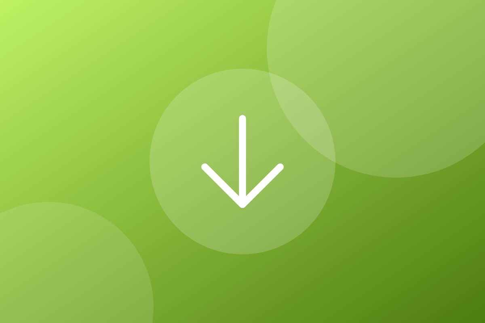

Prinsip 3R
Reduce, Reuse, Recycle: tiga langkah utama untuk mengurangi timbulan sampah sehari-hari.

Reduce
Mengurangi sampah dari sumbernya adalah langkah paling efektif dan paling murah.
- Bawa tas belanja, botol minum, dan wadah makan sendiri.
- Tolak sedotan serta kantong plastik sekali pakai.
- Beli produk isi ulang atau dalam kemasan besar.
- Rencanakan belanja agar tidak ada makanan terbuang.

Reuse
Gunakan kembali barang yang masih layak sebelum memutuskan untuk membuangnya.
- Jadikan botol dan kaleng bekas sebagai pot atau tempat alat tulis.
- Gunakan toples kaca untuk menyimpan bumbu dan makanan kering.
- Donasikan pakaian dan perabot yang masih layak pakai.
- Perbaiki barang rusak sebelum membeli yang baru.

Recycle
Olah sampah menjadi bahan atau produk baru agar tidak menumpuk di tempat pembuangan.
- Pilah dan bersihkan plastik, kertas, kaca, dan logam.
- Setorkan ke Bank Sampah atau pengepul terdekat.
- Pilih produk yang dibuat dari bahan daur ulang.
- Ikuti program e-waste untuk perangkat elektronik bekas.
Kebiasaan kecil,
dampak besar.
Inspirasi aksi sederhana yang bisa kamu lakukan hari ini.
Bawa tas belanja sendiri dan kurangi kantong plastik sekali pakai.
Gunakan botol minum isi ulang, bukan air kemasan sekali pakai.
Pisahkan sampah organik dan anorganik sejak dari dapur.
Ubah sisa sayur dan buah menjadi kompos untuk tanaman di rumah.
Matikan lampu dan cabut charger yang tidak digunakan untuk hemat energi.
Pilih produk dengan kemasan minimal atau yang bisa diisi ulang.
Servis perangkat elektronik sebelum memutuskan membeli yang baru.
Setorkan sampah anorganik bersih ke Bank Sampah terdekat.
Gunakan kembali toples atau botol kaca sebagai wadah penyimpanan.
Catat menu mingguan agar belanja pas dan tidak ada makanan terbuang.
Bawa wadah makan dan sedotan sendiri saat membeli makanan.
Jangan buang baterai bekas ke tempat sampah biasa. Kumpulkan di titik B3.
Cetak dokumen bolak-balik, atau cukup baca dalam bentuk digital.
Ajak keluarga dan tetangga memilah sampah bersama-sama.
Beli barang bekas berkualitas, selain hemat juga mengurangi sampah.